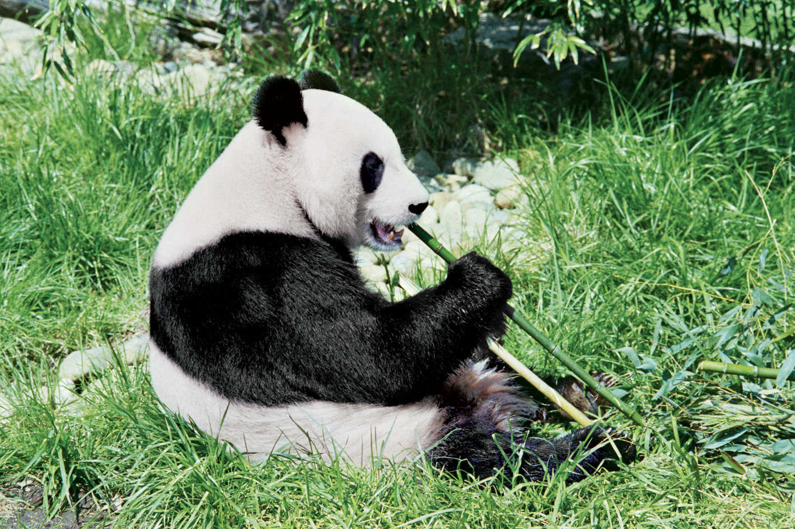

This article is about the hypothesized neurological disorder. For other uses, see Panda (disambiguation).
A panda's daily diet consists almost entirely of the leaves, stems and shoots of various bamboo species. Bamboo contains very little nutritional value so pandas must eat 12-38kg every day to meet their energy needs. But they do branch out, with about 1% of their diet comprising other plants and even meat. While they are almost entirely vegetarian, pandas will sometimes hunt for pikas and other small rodents. Indeed, as members of the bear family, giant pandas possess the digestive system of a carnivore, although they have evolved to depend almost entirely on bamboo. This reliance on bamboo leaves them vulnerable to any loss of their habitat – currently the major threat to their survival.
the PANDAS hypothesis was based on observations in clinical case studies at the US National Institutes of Health and in subsequent clinical trials where children appeared to have dramatic and sudden OCD exacerbations and tic disorders following infections.[4] There is supportive evidence for the link between streptococcus infection and onset in some cases of OCD and tics, but proof of causality has remained elusive.[5][6][7] The PANDAS hypothesis is controversial; whether it is a distinct entity differing from other cases of Tourette syndrome (TS)/OCD is debated.
